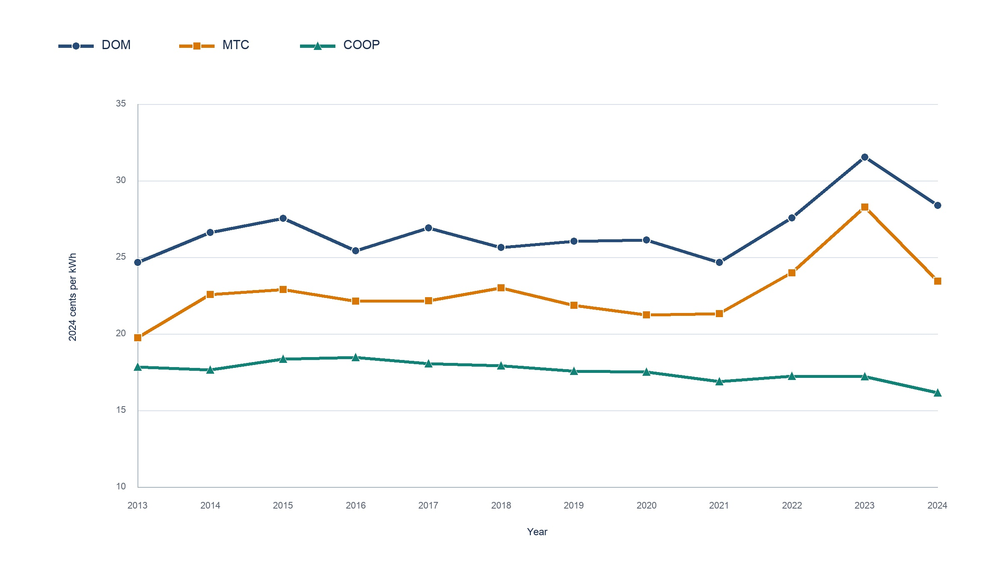

Figure 1. Residential electricity prices by utility ownership, 2013–2024.


Note. Lines show unweighted annual median bundled-service prices for DOM, MTC, and COOP utilities, expressed in constant 2024 cents per kWh. Source: EIA Form 861 and project calculations.
Download JPEG